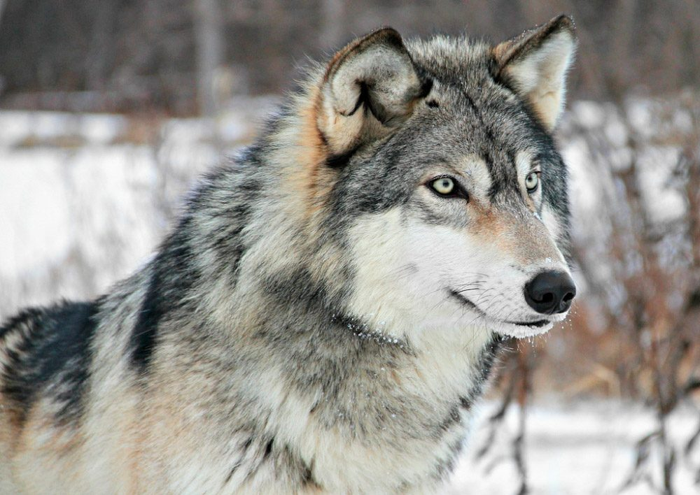
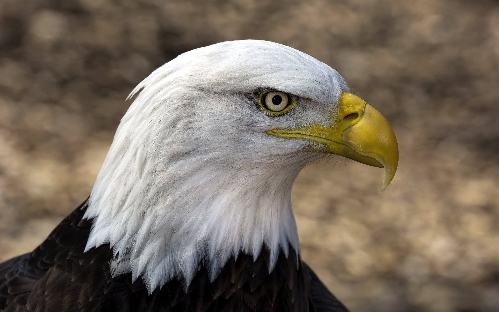
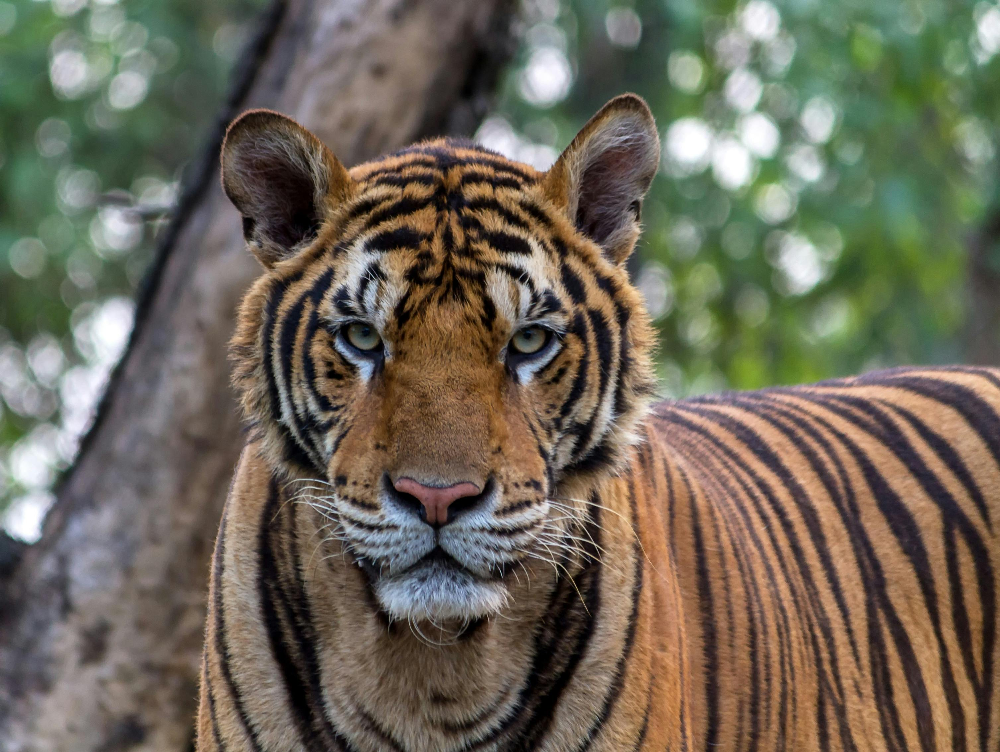

Os lobos habitam principalmente o Hemisfério Norte, sendo encontrados em várias regiões.
A Águia de Cabeça Branca habita principalmente na América do Norte, com populações concentradas nos Estados Unidos, Canadá e no norte do México. Ela prefere locais próximos a grandes corpos d'água, como lagos, rios e costas oceânicas, onde encontra abundância de alimento, como peixes. Além disso, as águias de cabeça branca costumam nidificar em árvores altas ou em penhascos, garantindo uma visão privilegiada do ambiente ao seu redor.
Os leões habitam principalmente na África, onde são encontrados em savanas eplanícies. Eles também estão presentes na Índia, especificamente no Parque Nacional da Floresta de Gir. Além disso, os leões têm uma ampla tolerância de habitat e podem ser encontrados em regiões montanhosas e desertos semi-áridos, mas não vivem em florestas tropicais ou áreas desenvolvidas.

Os tigres habitam principalmente a Ásia, com uma distribuição que abrange regiões como a Índia, China, Sibéria, Rússia e partes da Índia e do Himalaia. Historicamente, eles eram comuns em áreas como a Indonésia, Sumatra e a Ilha de Bornéu, mas atualmente ocupam menos de 6% de seu habitat original devido à caça ilegal e desmatamento. Os tigres preferem habitats com vegetação densa, fontes de água e áreas protegidas, como parques nacionais, onde podem encontrar presas e refúgio.
